➤
➤
➤
___________________________________________________________________________________
Composition
1. How many grams are contained in 0.44 moles of calcium?
2. Convert 4.54 moles magnesium carbonate to
molecules.
3. What is the mass of 4.1 x 1020 molecules of carbon monoxide?
4.
How many particles are contained in 1.67 g CaO?
5. The number of nitrogen molecules in 5.2 moles
of N2 is ________.
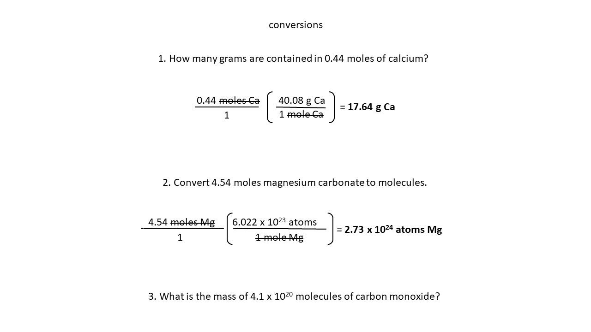
Find Out
How many moles of CO2 contain 2.79 x 1024 molecules?
 Find Out
Find Out
What is the mass, in grams, of 4.59 moles of oxygen gas?
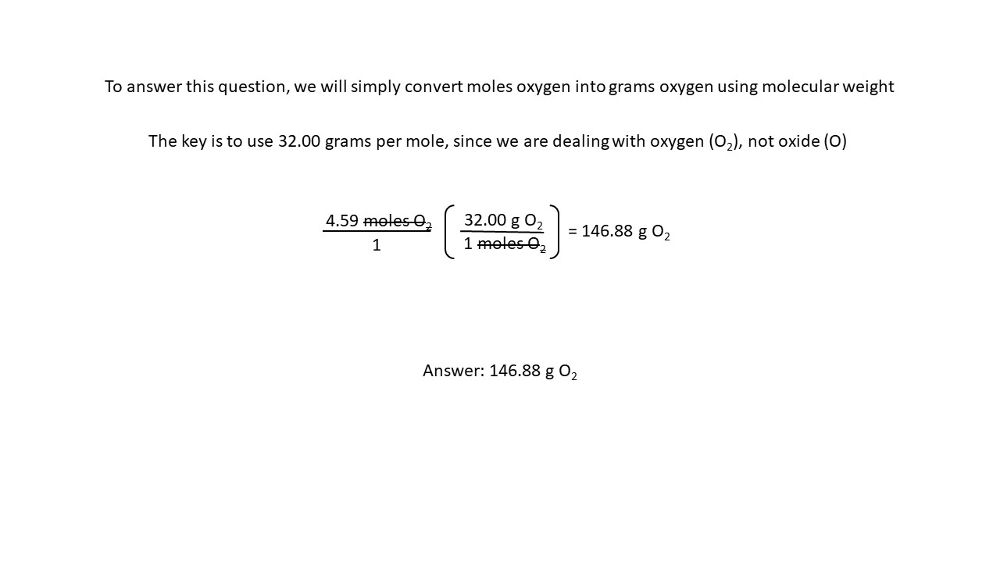
Find Out
Elemental analysis of a compound showed that it consisted of 54.53% carbon, 9.15% hydrogen and 36.32% oxygen
How many hydrogens appear in the empirical formula of the compound?
A) 2
B) 4
C) 6
D) 9
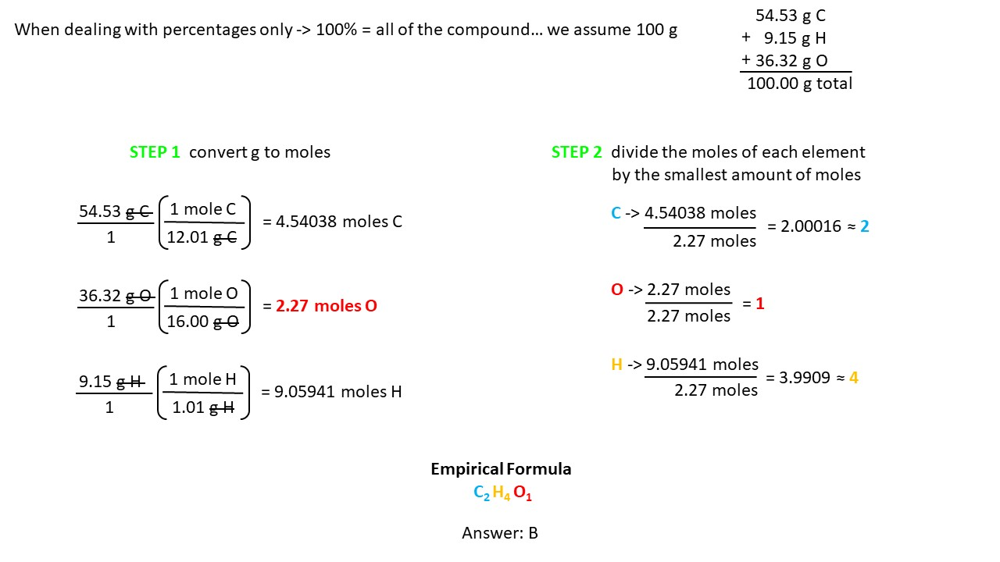
Find Out
If 200 grams of salt is dissolved in 8000 grams of water, what is the salt concentration in percent?
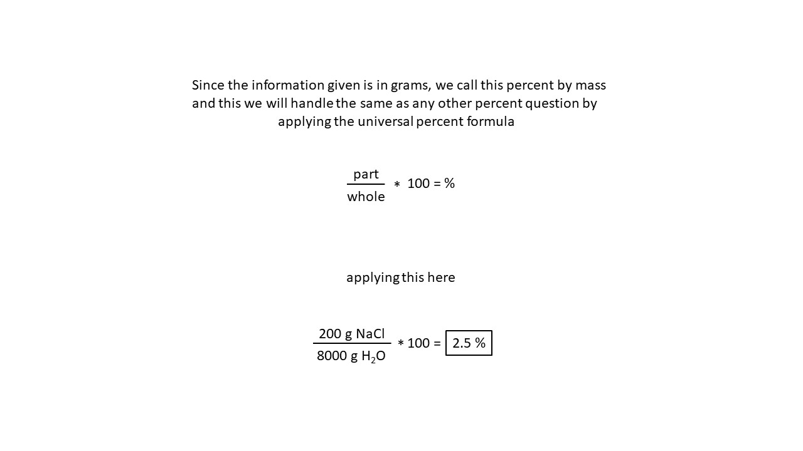
Find Out
Calculate the mass of carbon which contains the same amount of atoms as 20 g of sulfur
 Find Out
Find Out
How many oxygen atoms are in one mole of propanol?
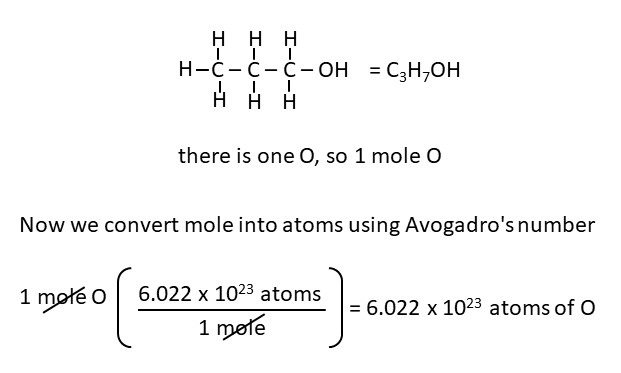
Find Out
Which of the following has the same number of atoms as 55.8 grams of Fe?
55.8 g He
32.0 g O3
32.0 g O2
16.0 g O2
 Find Out
Find Out
How many molecules of ibuprofen (C15H18O2) contain 2.84 x 1023 atoms
of hydrogen?
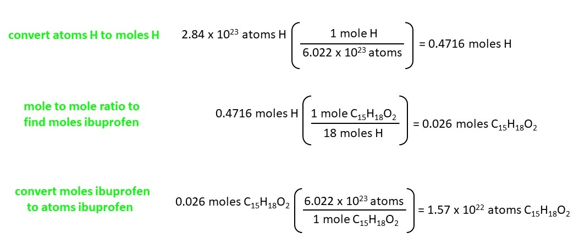
Find Out
How many grams are 4.2 x 1024 atoms of sulfur?
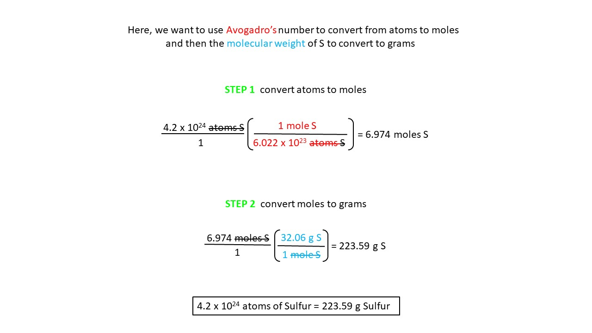
Find Out
What is the mass in grams of 2.50 gal of water?
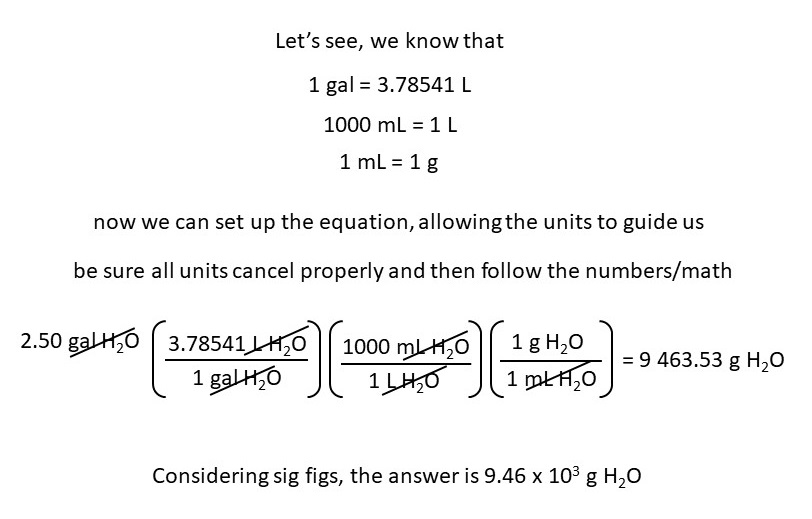
Find Out
Find the number of moles in 4.96 g of B2O3?
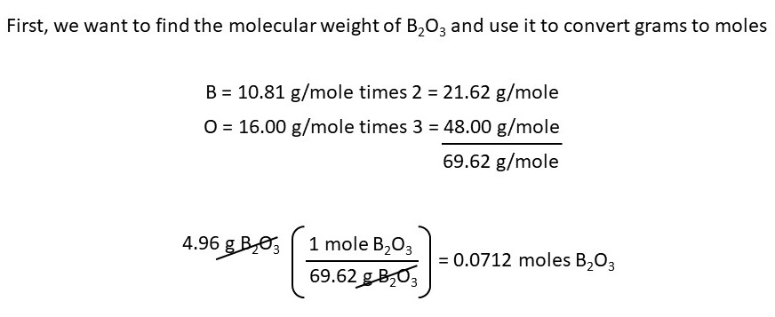
Find Out
The process in which solid converts into gas directly is known as?
A. vaporization
B. sublimation
C. crystallization
D. distillation
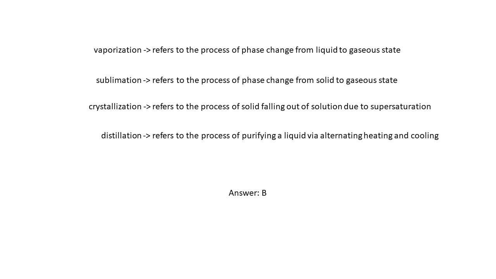
Find Out
Would ammonia be a solid, liquid or gas at
a) -55 °C
b) -17°C
c) -113°C
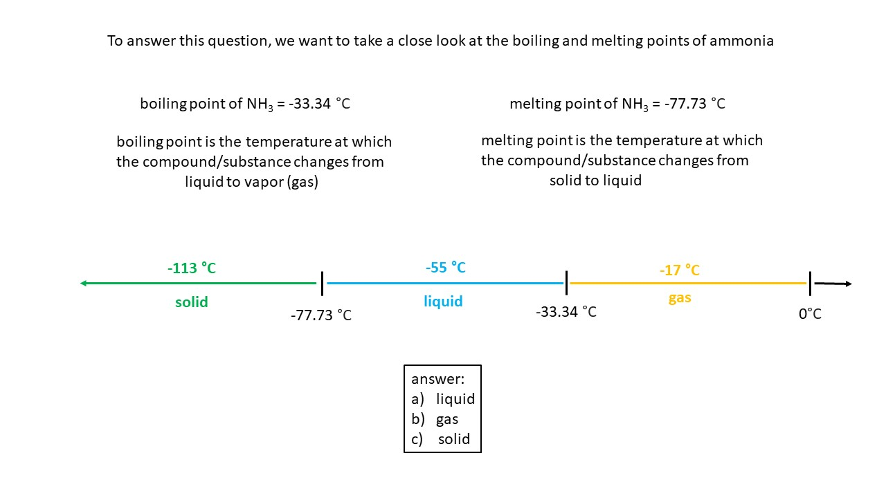
Find Out